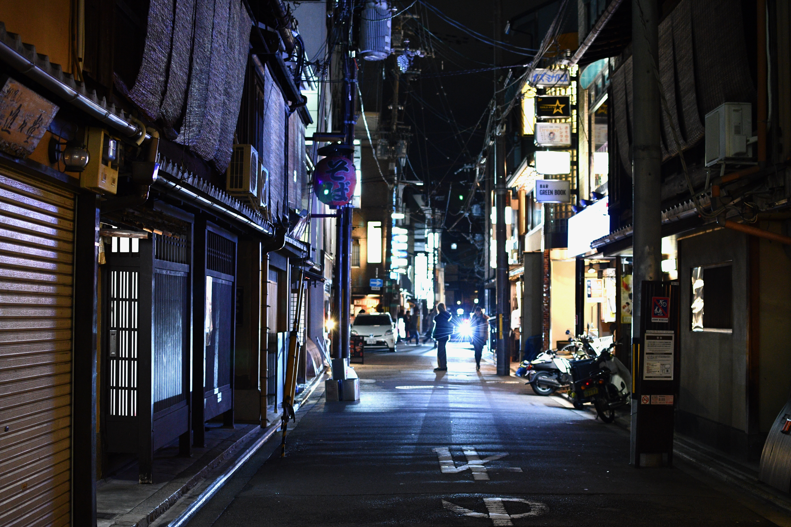
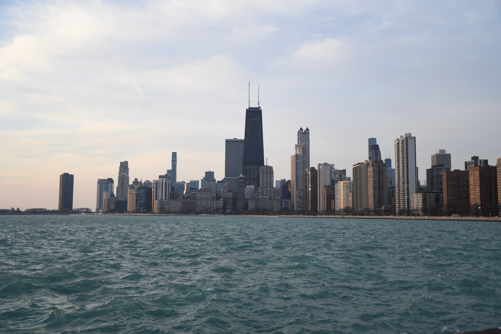
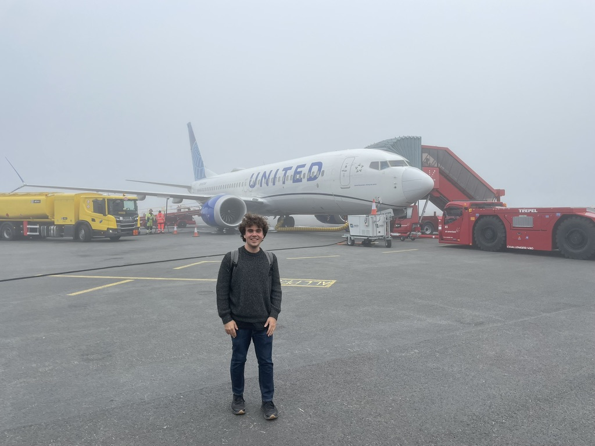

17 Flights, 21 days, & 26,808 Miles; An ANA Round-The-World Adventure!
My most complex trip yet! In the span of just 21 days I took 17 flights, 3 trains, 1 boat, and countless taxies to achevie my goal of circumnavigating the world.

The Next Station Is... Tokyo!
Japan is a land of contrasts, where ancient traditions meet modern technology. From the serene temples of Kyoto to the bustling streets of Tokyo, every corner offers a unique experience. I was captivated by the beauty of cherry blossoms and the tranquility of traditional tea ceremonies.

Chilly Chicago
Chicago is a city that never ceases to amaze me. From the stunning architecture of the skyline to the vibrant culture and food scene, there's always something new to discover. I spent my days exploring museums, enjoying deep-dish pizza, and taking in the breathtaking views from the Willis Tower.

Oh Man, It's Oman!
Oman is a hidden gem in the Middle East, known for its stunning landscapes and rich culture. From the majestic mountains to the pristine beaches, every moment felt like a postcard come to life. I explored ancient forts, wandered through vibrant souks, and marveled at the beauty of the desert.